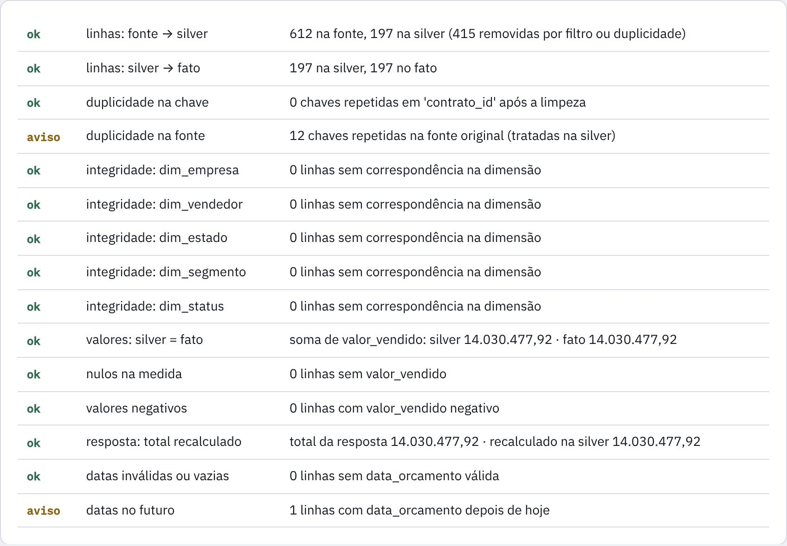
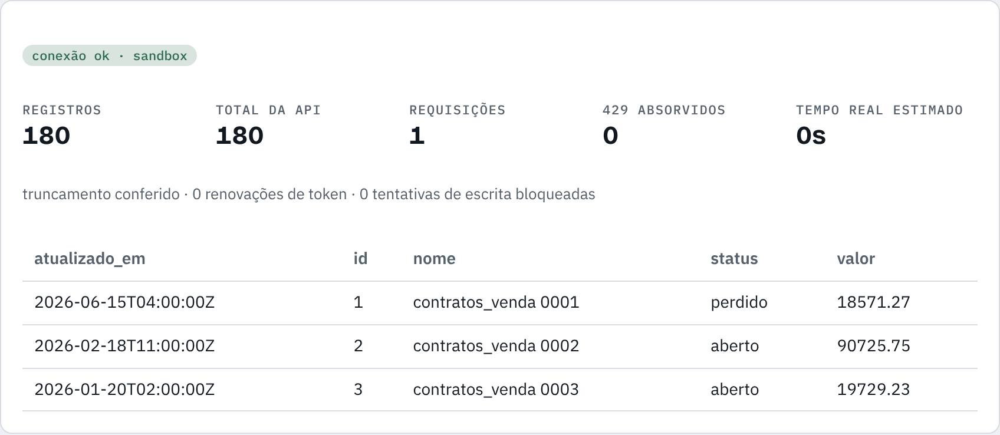

“Esse número está certo?”
Antes de qualquer número sair, um auditor automático refaz a conta do zero. Ele procura registros repetidos e datas no futuro. Também confere se a soma bate em cada etapa.
Depois, alguém do seu time abre a mesma conta no Google Colab e aprova. Só então a análise chega a você.
Por isso, o Lastro não deduz regra de negócio. Ele pergunta a você antes de calcular.

“Quanto custa um dashboard para empresas como a minha?”
Para começar, você não paga licença nova. O Lastro usa ferramentas gratuitas e o que já é seu. Por exemplo, a sua nuvem, as suas planilhas e o seu Power BI.
Além disso, o dashboard para empresas também pode abrir no Looker Studio, que é grátis.
O piloto tem escopo e valor por escrito, combinados com você antes de qualquer trabalho.
“Preciso contratar um analista para ter um painel de indicadores?”
Não para o trabalho pesado. Buscar, limpar, modelar, calcular e conferir fica com o Lastro.
Mas a decisão continua com gente. Quem aprova cada entrega é alguém do seu negócio, que sabe quando um número não faz sentido.
“Meus dados estão seguros? Vão mexer no meu sistema?”
Não mexemos no seu sistema: o Lastro só lê. Essa trava fica na própria credencial de acesso. Então ela não depende de alguém lembrar de tomar cuidado.
Além disso, se alguma etapa tentar gravar na sua fonte, o Lastro recusa e registra a tentativa. Cada empresa entra com login próprio e enxerga só os próprios dados.
Tudo o que o Lastro consulta, decide e entrega fica registrado com data e autor. Assim, daqui a seis meses, você sabe de onde veio cada número.
“Funciona com o que eu já uso?”
Estes sistemas já estão mapeados. Sabemos como cada um entrega os dados, quanto aguenta de consulta e onde costuma esconder erro.
- Omietestado em operação real
- IApptestado em operação real
- IMUVtestado em operação real
- Siengepela documentação oficial
- CV CRM · CVDWpela documentação oficial
- Pipedrivepela documentação oficial
- HubSpotpela documentação oficial
- Agendorpela documentação oficial
- Kommopela documentação oficial
- Blingpela documentação oficial
- Ploomespela documentação oficial
- RD Station CRMa confirmar no piloto
- Conta Azula confirmar no piloto
- Google Planilhaspela documentação oficial
- Google Drivepela documentação oficial
Planilhas Excel e CSV entram direto. Já as do Google Planilhas, o Lastro lê na pasta do Drive que você indicar. No fim, o painel abre no seu Power BI ou no Looker Studio.
Antes de tocar no seu sistema, testamos a conexão num ambiente simulado. Ele tem os mesmos limites e os mesmos erros do real.

“Quanto tempo até o primeiro painel de dados?”
Dá para ver agora. Suba uma planilha, responda até quatro perguntas e receba o painel com a conferência automática. A análise tem limite de 60 segundos. Se passar disso, o Lastro cancela e apaga tudo.
Nada fica com a gente. A análise roda numa área temporária. No fim, apagamos tudo e mostramos o recibo.
CSV ou Excel, até 5 MB e 50 mil linhas. Sem cadastro.
“Vou ter que explicar tudo de novo toda vez?”
Só o que muda. Na primeira vez, o Lastro pergunta o que não pode adivinhar. Por exemplo, qual valor somar, qual data vale e o que conta como registro repetido. Cada pergunta já vem com uma sugestão.
Depois, o que vale para a fonte fica guardado, como a data e a chave. Já a medida e o recorte, o Lastro confirma a cada pergunta nova. Na demonstração, a segunda análise sobre os mesmos dados precisou de 2 respostas, não de 5.

Como começar: um painel de indicadores em quatro passos
Uma pergunta real da sua empresa, de ponta a ponta, com as duas conferências.
A pergunta
Primeiro, conversamos sobre o número que mais pesa nas suas decisões hoje.
A conexão
Em seguida, ligamos uma fonte em modo só leitura. Ou você manda uma planilha.
As respostas
Então você define as regras que o Lastro não deve adivinhar.
O painel conferido
Por fim, você recebe a análise, a auditoria técnica e a planilha de conferência para o seu time aprovar.
Escopo e valor por escrito, antes de qualquer trabalho.
Feito por quem já errou o número antes
Montamos bases de dados e painéis de Power BI desde 2019, para indústria e construção civil. A conferência em duas camadas nasceu num projeto real. Nele, comparamos o painel e a planilha de conferência indicador por indicador, até baterem.
Cada armadilha que custou horas em produção virou uma checagem automática no Lastro. Por exemplo, um sistema que responde “deu certo” e esconde um erro.
Outras perguntas sobre o dashboard para empresas
Preciso comprar licença para ter o painel de dados?
Não para começar. O painel abre no Power BI que você já tem ou no Looker Studio, que é grátis. Além disso, o Lastro usa ferramentas gratuitas e a sua própria nuvem.
Quem define as regras de negócio?
Você. Antes de calcular, o Lastro pergunta qual valor somar e qual data vale. Também pergunta o que conta como repetido, qual recorte usar e quem revisa. Cada pergunta vem com uma sugestão, mas a escolha é sua.
O que acontece com a planilha da demonstração?
Ela fica numa área temporária, só durante a análise. No fim, apagamos tudo e mostramos o recibo, com arquivos, tabelas e tamanho. Se você sair no meio, a varredura apaga o que sobrou em até 15 minutos.
Posso subir uma planilha com CPF ou telefone de clientes?
Melhor não: a demonstração pede que você não envie dados pessoais. Mesmo assim, se o Lastro achar uma coluna desse tipo, ele avisa e deixa a coluna fora do painel.
A demonstração tem a revisão humana?
Não. Ela mostra só a conferência automática, e o painel vem marcado assim. A revisão de negócio, por alguém do seu time, entra no piloto.
Qual planilha eu posso usar?
CSV ou Excel, até 5 MB e 50 mil linhas. A primeira linha precisa ter o nome das colunas. Se não tiver uma à mão, use a planilha de exemplo, com orçamentos de uma construtora fictícia.